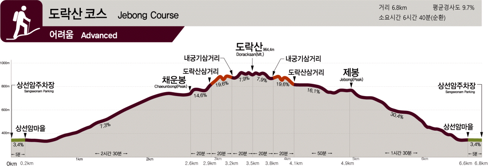
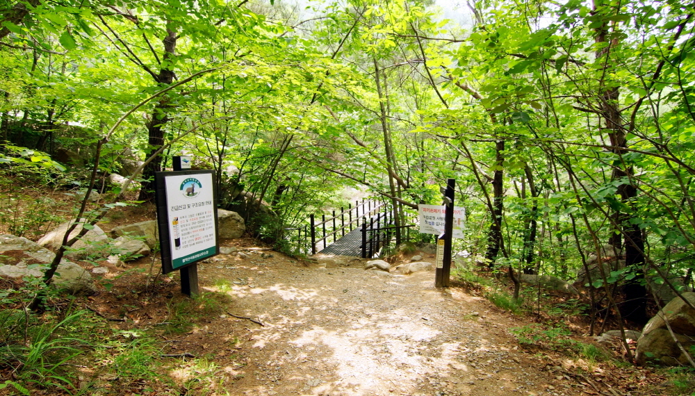
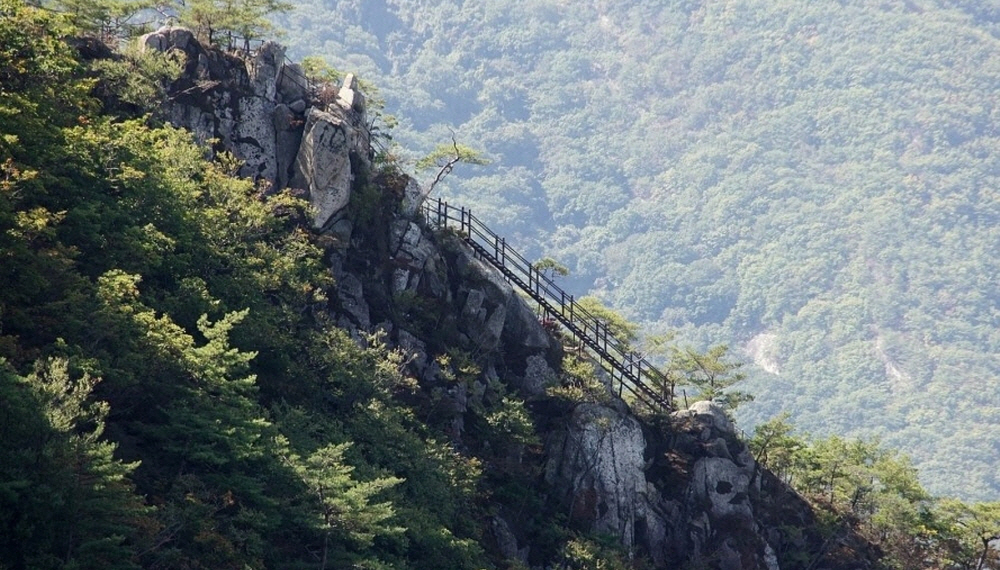
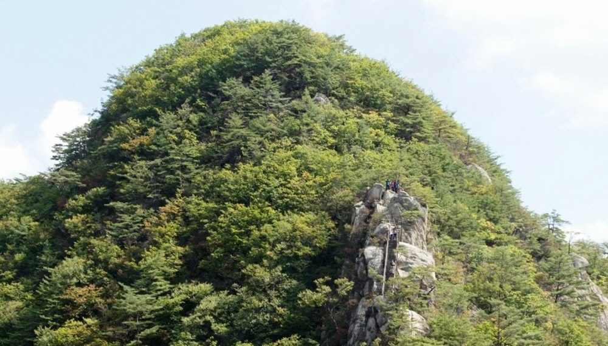
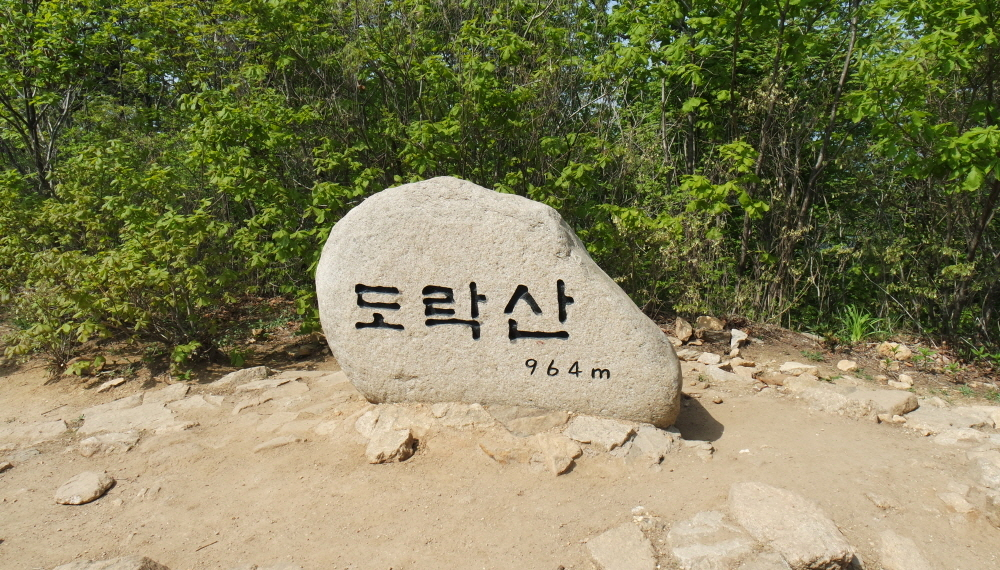
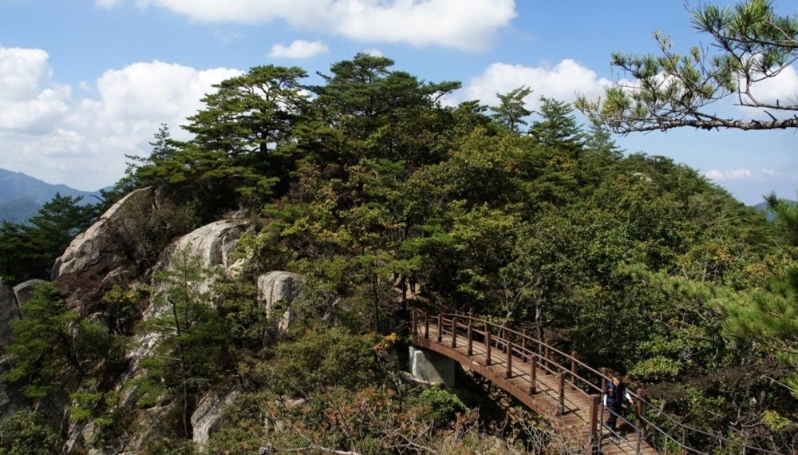
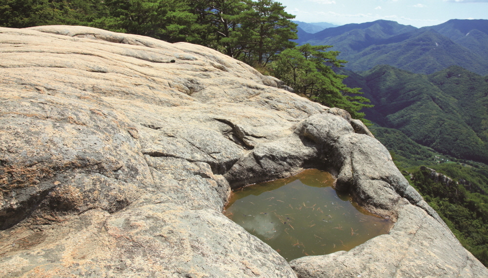
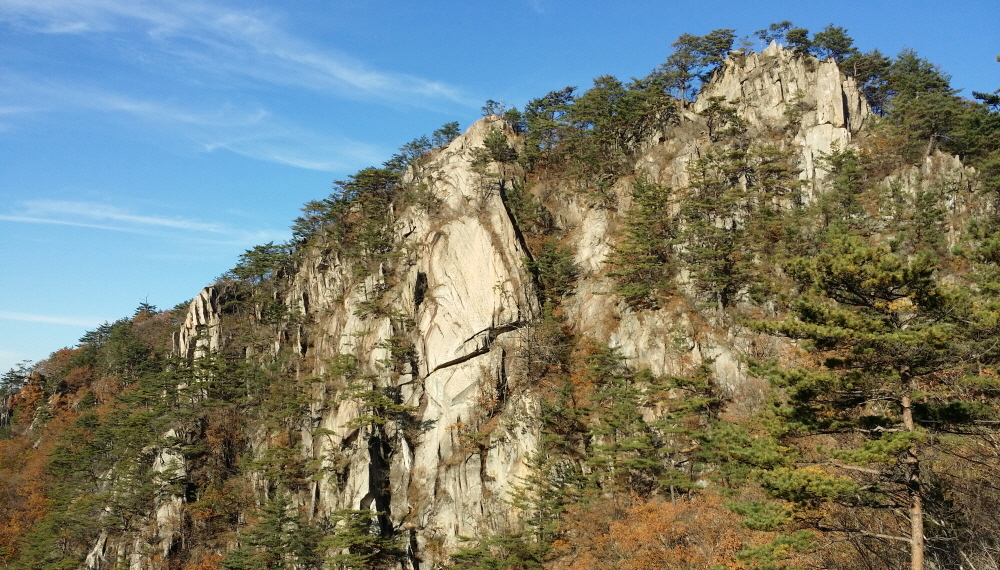

상선암~채운봉~도락산삼거리~도락산 정상~도락산삼거리~제봉~상선암(6.8km, 6시간 40분, 순환) “도를 깨닫는데 즐거움이 있는 산, 도(道)락(樂)산(山)” - 도락산의 매력은 올라갔던 길로 다시 내려가지 않아도 되는 회귀코스라는 점. - 기암괴석과 아름다운 소나무가 어우러진 경관을 볼 수 있다.








내궁기입구~내궁기삼거리~도락산정상(1.7km, 2시간 소요) 도락산을 오르는 가장 짧은 코스